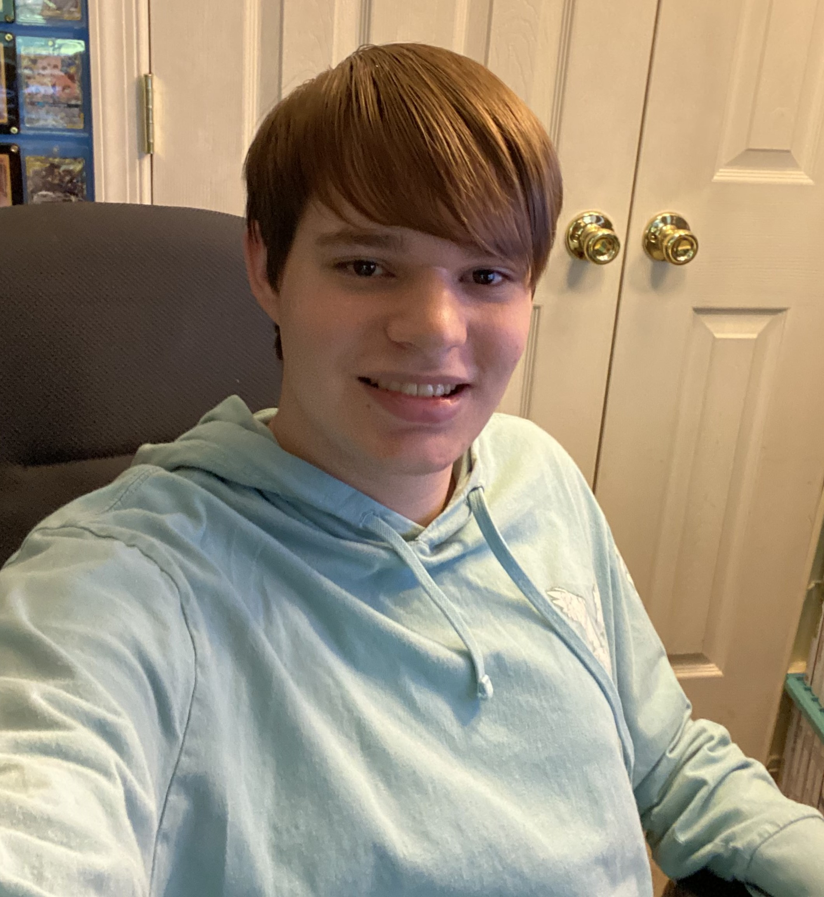

Colby's 235 Homepage
About Me

Name:
Colby ShofflerYear + Major:
2nd year, IGM, Game Design and DevelopmentSkills:
Programming (C++, some Java), Video EditingInterests:
Programming, constructing narratives, the letter “j”Other hobbies:
Gaming, Video Editing, Pokémon Trading Card GameFavorite Foods:
Chicken Alfredo, Pizza, Twice Baked PotatoFavorite Games:
Minecraft, Undertale/Deltarune, Super Mario Galaxy, Link's Awakening, Smash Bros UltimateFavorite Movies:
Into/Across the Spiderverse, Guardians of the Galaxy 3Favorite Animations:
Gravity Falls, BoJack Horseman, The Owl HouseCareer Goals:
Create interactive media projects that tell stories and take advantage of the medium to engage audiences
My Class Projects and Exercises
My Github
Name: